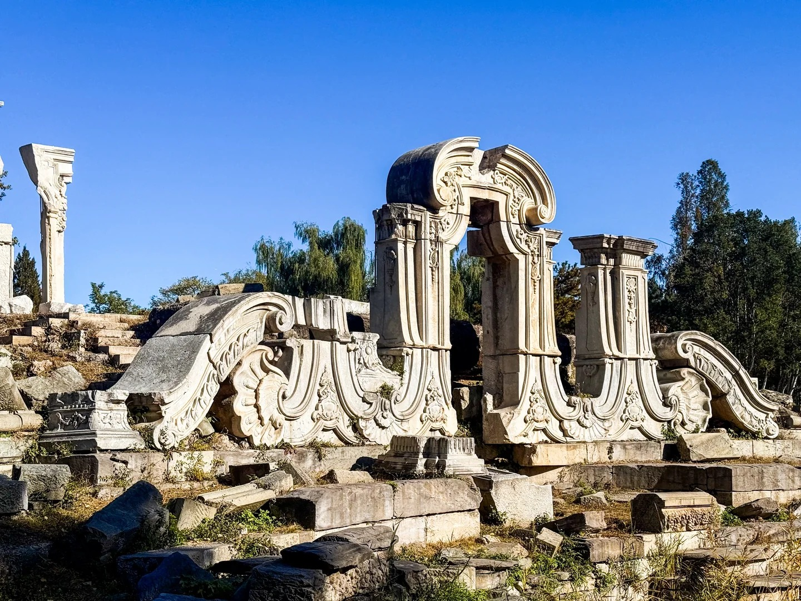
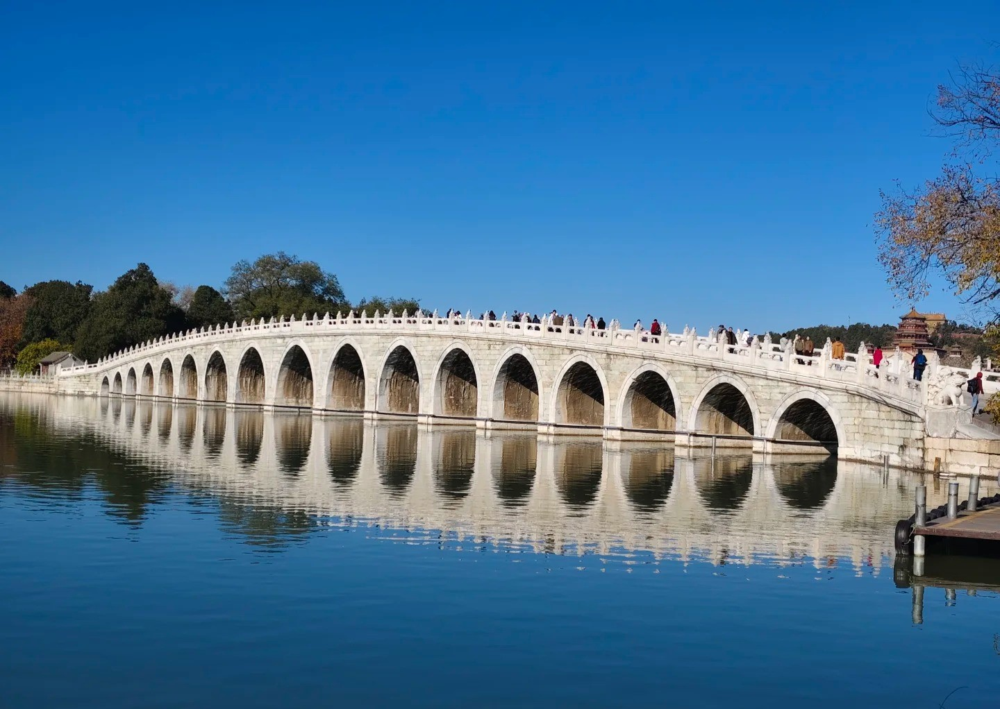

历史背景
清朝是中国古典建筑走向极致的时代，皇家园林、宫殿和庙宇的营建达到巅峰。同时，在晚期西方建筑元素传入后，出现了中西合璧的建筑风格。
- 皇家园林：颐和园、圆明园等园林达到布局与景观的高度融合；
- 宫殿建筑：故宫等宫殿体现清朝典雅宏大的礼制与装饰；
- 中西合璧：晚清洋楼与传统宫殿并存，体现文化碰撞。
清朝建筑工程数据可视化
清朝·建筑类型统计
注：清朝以宫殿、园林、庙宇为主要建筑类型，晚清则出现越来越多的公共建筑与西式洋楼。
清朝·建筑材质分析
注：清代建筑以木构、砖石为基础，彩绘、雕刻等装饰工艺达到极高水平，晚清洋楼则引入钢筋、玻璃等材料。
清朝代表性建筑成就
点击任意卡片查看详细信息
故宫
作为明清两代皇宫，故宫规模宏大，装饰华丽，体现了最高等级规范与国家礼制的建筑形式。
颐和园
颐和园是清代皇家园林的典范，以人工与自然景观相融的"借景"手法著称，具有极高的园林艺术价值。

圆明园
清代皇家园林巅峰之作，集中国传统造园艺术之大成，同时融入西洋楼等异域建筑，被誉为“万园之园”，是中西建筑文化碰撞与融合的经典范例。

十七孔桥
颐和园内最长的石拱桥，连接东堤与南湖岛，桥身十七孔如虹卧波，将江南水乡韵味融入皇家园林，是清代桥梁建筑技艺的杰出代表。